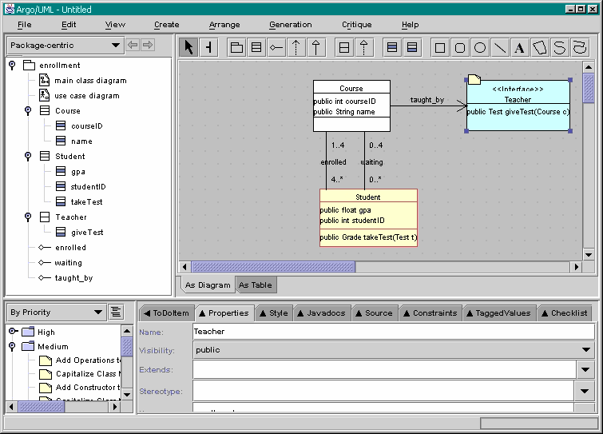

tool on the toolbar. Name it "taught_by".
tool on the toolbar. Name it "taught_by".Note that the association is made unidirectional by ArgoUML, according the UML principles.
Now, you should have the situation as shown in the figure below.
Previous step | Back to ArgoUML Tours | Next step
Now, if you want the Course class to use an interface,
use the Interface icon in the toolbar,
and then click anywhere in the Editor pane (top-right).
Name the interface "Teacher", and create the operation "giveTest"
on this interface.
Set the result and parameter of this operation
as indicated in the figure below.
Then add an association between the Course
class and the new interface by using the
tool on the toolbar. Name it "taught_by".
Note that the association is made unidirectional by ArgoUML, according the UML
principles.
Now, you should have the situation as shown in the figure below.

Back to ArgoUML Tours
Back to ArgoUML Home